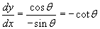
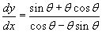
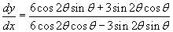

This device cannot display Java animations. The above is a substitute static image
1. A circle
The applet initially shows a circle, which is defined very simply as r = 1 (if the circle looks squished, click Equalize Axes). In this applet, th is used instead of θ to make it easier to type. Move the th slider to change the value of θ. In polar coordinates, θ is the angle between the positive x axis and a line from the origin through the point (which is illustrated as a dashed magenta line on the graph). θ is just the angle between this dashed line and the positive x axis.
Notice that for this polar equation, as θ changes and as the magenta point traces out the polar curve, its distance from the origin, r, is always 1, for any value of θ. For this polar equation, the parametric equations are x(θ) = cosθ and y(θ) = sinθ, so the derivative is

which matches what we got for the parametric derivative of a circle.
2. Archimedean Spiral
Select the second example from the drop down menu, showing the spiral r = θ. Move the th slider, which changes θ, and notice what happens to r. As θ increases, so does r, so the point moves farther from the origin as θ sweeps around. The parametric equations are x(θ) = θcosθ and y(θ) = θsinθ, so the derivative is

a more complicated result due to the product rule.
3. Extended Spiral
Select the third example. This shows the same spiral, but now tmin = -6.28, allowing θ to be negative. Move the th slider to make θ negative and see what happens. What is the value of r in this case? What does a negative r mean? As you will notice, a negative r means that the point is at a distance of r from the origin, but it is opposite the half-line used to show where θ is located. This ability to have negative r is what enables polar equations to represent some amazing and beautiful curves.
4. A rose
Select the fourth example, showing a four-petaled rose defined by r = 3sin2θ. Move the th slider and notice whether r is positive or negative for each petal of the rose. The parametric equations are x(θ) = 3sin2θcosθ and y(θ) = 3sin2θsinθ, so the derivative is given by

If you'd like, change the 3 and the 2 in the definition to different values and see what those changes do to the rose. For
r = 3sin3
θ, how many times does the curve get traced as you change
θ from 0 to 6.28?
As you increase the multiple inside the sine function, the graph gets coarser-looking, because it is being traced multiple times. To make it look smoother, either reduce tmax so that it only is traced once, or increase intervals to 1,000 so that there are more segments of the curve drawn, making the curve look smoother.
5. A Limaçon
Select the fifth example, showing a Limaçon, defined as r = 1+2cosθ. If you'd like, play around with the 1 and the 2 in this definition and see how it changes the shape of the curve.
Other 'Applications of Differentiation' topics
(C) 2011 Copyright Math Open Reference.
All rights reserved